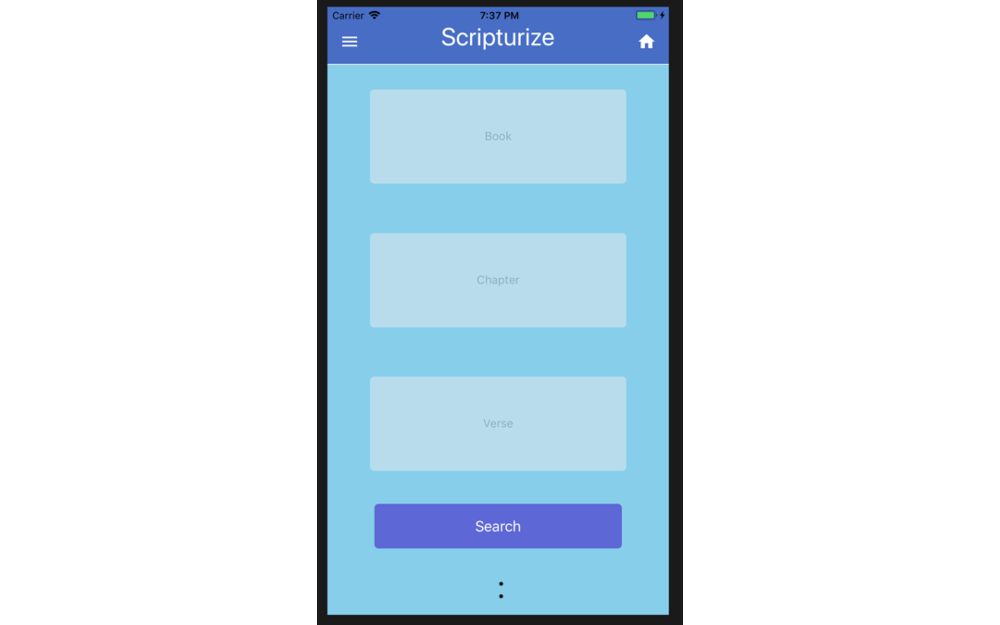

My Projects

Steganography
I created a C++ based Terminal application that encrypted and decrypted text into pictures.
Github
UT Martin Virtual Campus
Worked with Houston Howard and Mason Cullen to recreate a portion of the UT Martin Campus using tools like AutoCad and the Unity Game Engine.
Research Paper Standalone Downloads
C# SQL Music Collection
Created a simple Windows Form application in C# that ran commands to pull and push data to a local SQL Database.
Github

Scripturize
Created during Code for the Kingdom Nashville 2018.
Working with my teammates Abby Fleming, Geoff Webb, Jonathan Hinton, and Matthew Byrd we created a React Native application that returns a verse using an ESV Bible API. We tested our React Native application on iOS and also built it for the Android operating system. Github